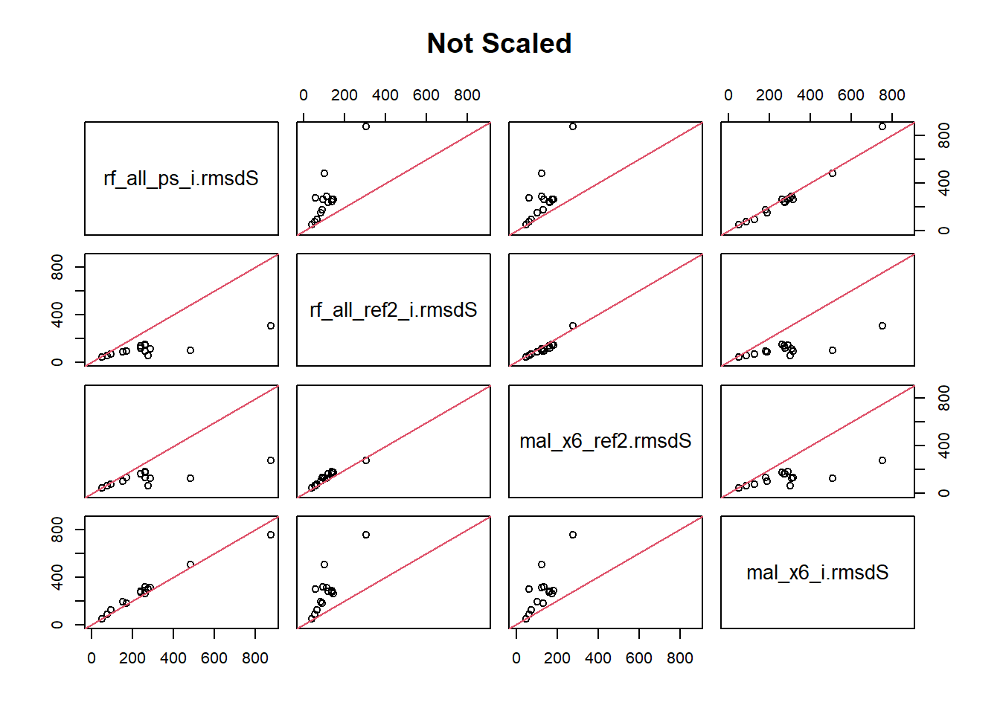

Random Forests with all the predictors on a dataset that has the largest 2.5% fo values clipped seems to be a pretty good model.
The only other thing I can think to try is to subset it by FPAG and run them without any crossover.
Notes
There were several peculiarities that popped up in the last Model Eval section.
The rmsds between the distance matrices and the random forests didn’t make a lot of sense. There were NAs in the RF imputations that I didn’t think should have been there. The physical cd that I added a while back is being listed as a negatively important variable. I think that means that it is hurting the process. I am going to get all of these onto the same page. That should take care of the NAs and give me a better understanding of the rmsds.
# Data tidying and accesslibrary(tidyverse, quietly = T)library(RSQLite)# library(readxl)# library(writexl)# yaImpute and related library(yaImpute)library(vegan)library(randomForest)# plots and tableslibrary(esquisse)library(knitr)# No sci-notation. options(scipen =999)
Pull in data
Code
KEEP <-c("KEEP")rm(list =ls()[!ls() %in% KEEP])# Pulling from my new interim save pointcon <-dbConnect(RSQLite::SQLite(), "./attempt_032524.db")imp_data <-dbGetQuery(con, "select * from imp_data")# zimp_data <- dbGetQuery(con, "select * from regen_only_imp_data")plots <-dbGetQuery(con, "select * from fvs_plotinit_plot")plants_ref <-dbGetQuery(con, "select * from plants_ref")dbDisconnect(con)# sp_prev was saved from imutation 1load("sp_prevalence.Rdata")con <-dbConnect(RSQLite::SQLite(), "../../Data/_FIADB_WA.db")cond <-dbGetQuery(con, "select PLT_CN, CONDID, PHYSCLCD from cond")dbDisconnect(con)KEEP <-append(KEEP, c("cond", 'plots', 'plants_ref', 'imp_data', "sp_prevalence"))g <-read_csv("./good_SUB_plots2.csv", col_types =c("cccci"))
fpas <- imp_data_FPAKEEP <-append(KEEP, "fpas")# Removing the fpags with less than 120 plots. # This needs to happen for RF. Must be less than 53. t <- fpas |>group_by(FPAG) |>summarise(n =n()) |>arrange(desc(n)) |>filter(n >64)keep <- t$FPAGfpas <- fpas |>filter(FPAG %in% keep)# I am not sure this is the way to set levels. fpas$FPAG <-factor(fpas$FPAG, levels = keep)fpas$fpa <-as.factor(fpas$fpa)fpas$PHYSCLCD <-as.factor(fpas$PHYSCLCD)
I could do it via fpa instead of FPAG.
1900 rows lost due to factor levels.
yai objects
K is being set to one for this iteration. I don’t want there to be additional error due to the averaging of y variables. I just want to know which imputation has the smallest difference.
Code
rm(list =ls()[!ls() %in% KEEP])refs <-rownames(fpas[1:(3*nrow(fpas)/4),])# X variablesnames(fpas)[1:10]
yfull <- fpas |>select(1, 11:ncol(fpas))y <- yfull[refs,]y <-remove_rownames(y)y <-column_to_rownames(y, "STANDPLOT_CN")# can't have factors in msn or malx6 <- x |>select(-FPAG, -PHYSCLCD)k =1yrf <-cbind(whatsMax(y[ ,1:(ncol(y)-1)]), y[, ncol(y)])names(yrf) <-c('Max_SP', 'sp_max_TD', 'total_TD')
msn & mal 6
Code
msn_x6_ps <-yai(x = x6, y = y, method ="msn", k = k)mal_x6_ps <-yai(x = x6, y = y, method ="mahalanobis", k = k)KEEP <- KEEP |>append(c("refs", 'msn_x6_ps', 'mal_x6_ps', 'rf_all_ps', 'k'))KEEP <- KEEP |>unique() |>sort()
RF all
# Separating this because it takes a long time and I don't want to run in by accident. # rf_all_ps <- yai(x = x, y = yrf, method = "randomForest", k = k)# save(rf_all_ps, file = "imps_0402/rf_all_ps.Rdata")
RF 6
# Separating this because it takes a long time and I don't want to run in by accident. # rf_k6_ps <- yai(x = x6, y = yrf, method = "randomForest", k = k)# save(rf_k6_ps, file = "imps_0402/rf_k6_ps.Rdata")
Kralicek 3 msn & mal
Code
x3 <- x |>select(CC, BA, SDI)msn_k3_ps <-yai(x = x3, y = y, method ="msn", k = k)mal_k3_ps <-yai(x = x3, y = y, method ="mahalanobis", k = k)KEEP <- KEEP |>append(c('mal_k3_ps', 'msn_k3_ps', 'rf_k3_ps'))
RF k3
# Separating this because it takes a long time and I don't want to run in by accident. # rf_k3_ps <- yai(x = x, y = yrf, method = "randomForest", k = k)# save(rf_k3_ps, file = "imps_0402/rf_k3_ps.Rdata")
Within the msn and mal imputations, The plot comparisons are messy. The scaled version looks to me like mal x6 is best. For the un-scaled one, they mostly look the same.
mal_x6 had the most species with the lowest rmsd. However, there were no major winners. All of the imputations had similar outcomes by category. mal k3 was pretty far below the others in total TD.
In Random Forests, The scaled plots look to favor the all predictors rf or the Kralicek 3 with the all set winning. The un-scaled one doesn’t tell me anything.
In the versus plots, it seems that rf_all is the winner by a hair. rf_k3 is a close runner up.
What does it all mean
Scratch
Looking at rmsd for the full set and where total_TD isn’t zero.
std dev is uniformly higher than the mean. Makes sense because of zeroes dragging down the mean.
There was something in the documentation about these types of count data being assumed to follow a log-normal dist. I played with that a little earlier, but it may be time to see if I can make anything of it.
That is the correct value of rmsd. 0.8819280 is the scaled one. 993.53904 is the sd of the reference rows above.
Code
tr/993.53904
[1] 0.881928
Normalizing by the sd in this case isn’t great. There is just too many zeroes.
Obviously what I am about to do isn’t great. However, it’s easier than running another imputation. I am going to get an idea of the rmsd per fpag by adding the CNs and summarizing by fpag.
The -40k difference is crazy. 10k is more reasonable, but what percent of the data would I have to clip to remove the worst outliers? What percent is essentailly zero?
With 95% confidence for the full dataset, the true average difference is between -84 and -57. Since this is count data, that means the true difference is -75, or one tree counted on a microplot.
I am reading this as, there are usually no seedlings and therefore no differences, but even when there are, the difference is small. However, there are occasionally large influxes of seedlings that throw off this type distribution.
We probably need the large differences, but only in a very small percentage of regeneration events. I assume it is also the case that only some species reproduce like this.
Code
med <-median(t2$diff)# t2 |> filter(near(diff, 0, tol = .5)) |> nrow()# t2 |> filter(near(diff, 0, tol = 75*30)) |> nrow()
of 17,040 reference plots, here are the number of plots per difference in counted trees. 98% of plots are within 30, 91% within 10.
num subplots
diff of trees
8293
0
10751
1
12051
2
13013
3
13667
4
14141
5
14593
6
15572
10
16455
20
16746
30
Code
# 16746/nrow(t2)((1-.975)/2)*nrow(t2)
[1] 213
If I sort the list and clip 1.25% of the references from each end, that is 213 rows on each side. 426 rows removed in total.
Looks like the imputation is biased. The 95% confidence interval is -33 to -22, or half a tree. Diff is imputed minus observed, so there is 22 to 33 less trees on average in the imputed data.
Imp fix?
The issue I think I need to solve here is that rmsd and sd are so high in each set that any imputation is going to give us too much variation. However, looking at the differences, it seems like we are mostly getting close to the mark. I would like rmsd to be less than sd. That is, I would like the variation from imputation to be within the bounds of natural variation. Surpisingly, most of the predictors that I have tried are not getting us closer. The Phys code is being used as a factor, but it is also a scale of moisture conditions. I could run it as a numeric and see if that helps the imputation. I also have not added eco-region as a category yet. That could help. I am hesitent to go looking for more predictors at this time. I want to get this model running, then come back and tune it later. As long as the model is somewhat reasonable, it is good enough for now. Reasonable, in this case, means that the model predicts seedlings within the level of natural variation.
There is a tool in yaImpute to correct bias. I will have to look into that tool. I think that an interesting test would be to do this for a section of Idaho and run the set in here and in FVS. The IE variant has the full regen model and it could give me an idea of accuracy.
Running another imputation. This time I have removed total TD greater than 2900. This was done by trial and error to clip 426 rows with the highest densities from the reference set. It actually clipped 423 rows.
Then I repeated what was done before.
Code
rm(list =ls()[!ls() %in% KEEP])fpas2 <- fpas |>filter(total_TD <2900)refs2 <-rownames(fpas2[1:(3*nrow(fpas2)/4),])x <- fpas2 |>select(STANDPLOT_CN, CC, BA, SDI, ELEVFT, SLOPE, ASPECT, PHYSCLCD, FPAG)x <-remove_rownames(x)x <-column_to_rownames(x, "STANDPLOT_CN")yfull <- fpas2 |>select(1, 11:ncol(fpas2))# That is the same number of rows as the 95% of the data from before. y <- yfull[refs2,]y <-remove_rownames(y)y <-column_to_rownames(y, "STANDPLOT_CN")# can't have factors in msn or malx6 <- x |>select(-FPAG, -PHYSCLCD)k =1yrf <-cbind(whatsMax(y[ ,1:(ncol(y)-1)]), y[, ncol(y)])names(yrf) <-c('Max_SP', 'sp_max_TD', 'total_TD')
msn & mal 6
Code
msn_x6_ref2 <-yai(x = x6, y = y, method ="msn", k = k)mal_x6_ref2 <-yai(x = x6, y = y, method ="mahalanobis", k = k)KEEP <- KEEP |>append(c('mal_x6_ref2', 'msn_x6_ref2'))KEEP <- KEEP |>unique() |>sort()
RF all
Code
# Separating this because it takes a long time and I don't want to run in by accident. # rf_all_ref2 <- yai(x = x, y = yrf, method = "randomForest", k = k)# save(rf_all_ref2, file = "imps_0402/rf_all_refs2.Rdata")
Warning in compare.yai(rf_all_ps_i, rf_all_ref2_i, mal_x6_ref2, mal_x6_i): not
all scale factors are the same.
eval
Code
plot(t_ns, main ="Not Scaled")plot(t, main ="Scaled")

Big differences between the last set and this one. I don’t trust the scaled plots to mean anything. Due to the outliers, I don’t think normalizing by sd is the way to go. Un-scaled rmsd is way less in the ref2 set, this imp.
TSME_TD in the prevalent set. Pipo, pien, and pimo3 in the common set. uncommon and rare look okay too. Total TD is worst, but that is mostly just there to make working with this set easier.
Code
summary(all_dist)
rmsd sd mean iqr
Min. : 39.87 Min. : 36.79 Min. : 2.968 Min. : 0.00
1st Qu.: 68.92 1st Qu.: 69.79 1st Qu.: 8.266 1st Qu.: 0.00
Median : 96.05 Median :116.05 Median : 16.257 Median : 0.00
Mean :109.27 Mean :132.81 Mean : 34.106 Mean : 21.42
3rd Qu.:133.01 3rd Qu.:145.07 3rd Qu.: 34.354 3rd Qu.: 0.00
Max. :302.94 Max. :444.64 Max. :238.739 Max. :299.86
q75 q85 q95
Min. : 0.00 Min. : 0.00 Min. : 0.00
1st Qu.: 0.00 1st Qu.: 0.00 1st Qu.: 0.00
Median : 0.00 Median : 0.00 Median : 74.97
Mean : 21.42 Mean : 42.84 Mean : 160.64
3rd Qu.: 0.00 3rd Qu.: 0.00 3rd Qu.: 206.15
Max. :299.86 Max. :524.76 Max. :1199.44